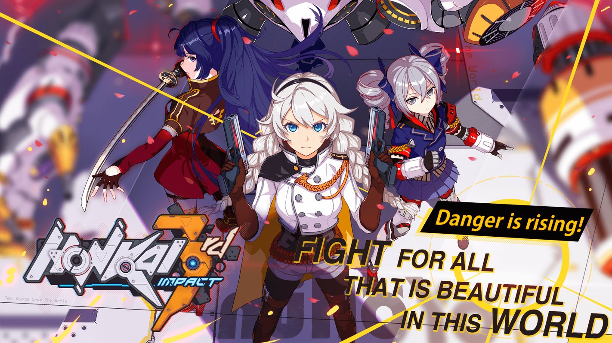

Honkai Impact 3rd is a free-to-play 3D action role-playing game developed and published by miHoYo. The game is set in an alternate version of Earth, plagued by catastrophes resulting from "Honkai". Honkai is largely viewed as a malevolent force with a will of its own, able to corrupt humans into undead creatures, manifest itself in the form of various monsters, and select various individuals known as "Herrschers" to imbue with god-like powers able to trigger apocalyptic events.
For centuries, mankind fought against the might of the Honkai – sentient beings bound on the destruction of humans. As the Honkai grows stronger than ever before, their 3rd impact on Earth could be our certain extinction. An organization – called Schiksal – holds responsible for our survival, enter the world of Honkai Impact 3. To destroy the Honkai menace, they deploy a division of warriors who do not fear death: Valkyries. Armed to the teeth, the Valkyries are the most elite group of soldiers gifted with talents fit for combat and fully-equipped with the best technology.
Herrschers, as their title suggests, effortlessly transcend human capabilities, are capable of bending worldly laws to their whim and command entire armies of zombies and Honkai Beasts, to overwhelm and destroy human civilization, the goal of the Honkai.
One Herrscher alone is quite powerful, but against humanity's technology, it often takes more than one of them to actually destroy the world. Additionally, as the Honkai adapts, the Herrschers adapt too. Two Herrschers of the Previous Era were able to bring destruction to civilization with abilities engineered specifically to counter them, while lacking the ability to contend with the destructive capability of other Herrschers.
Fortunately, not all Herrschers are against humanity, as in rare cases they can conquer the will of the Herrscher inside them that is making them succcumb to their hatred against other humans, or can become allies instead. This "will" can also align with its host.